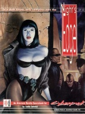

|  | Fiche technique |
| Supplément pour le jeu de rôles Cyberpunk 2020, édité par Ianus Games (Dream Pod 9) (1993) | |
| Langue | Anglais |
| Thème | Alternate Reality : les vampires et autres créatures de la nuit |
| Qualité du background | 3 / 5 |
| Qualité des scénarii | - |
| Qualité des règles | 4 / 5 |
| Qualité des illustrations | 4 / 5 |
| Qualité de l'écriture | 4 / 5 |
Original mais opportuniste, ce supplément introduit un brin de fantastique dans Cyberpunk avec les vampires. Plusieurs pistes sont offertes pour introduire les vampires sous des formes rationnelles ou fantastique selon ce qui correspond le mieux à la campagne du MJ. Malheureusement, le background est un peu léger à ce niveau, et au lieu de fournir un travail en profondeur, les auteurs ont préféré ajouter des pouvoirs psy et des lycanthropes, ces derniers n'ayant pas forcément leur place dans une campagne cyberpunk. Le modèle White Wolf n'étant pas toujours bon à copier, ce supplément qui aurait pu être excellent se contente d'être "pas mal", et c'est dommage. Il sera complété par le supplément Bloodlust.
{kind=link}